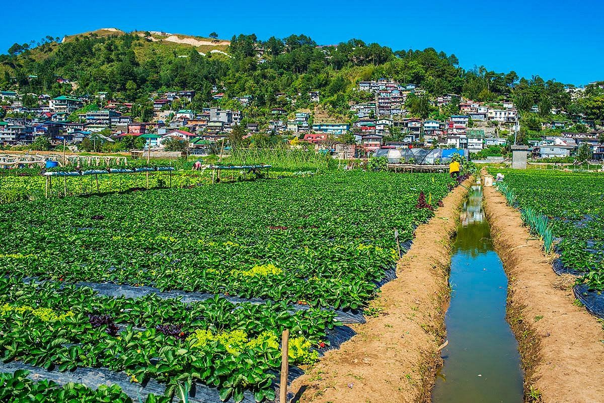
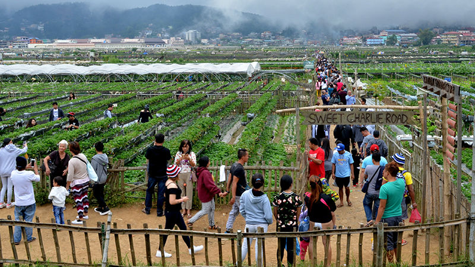
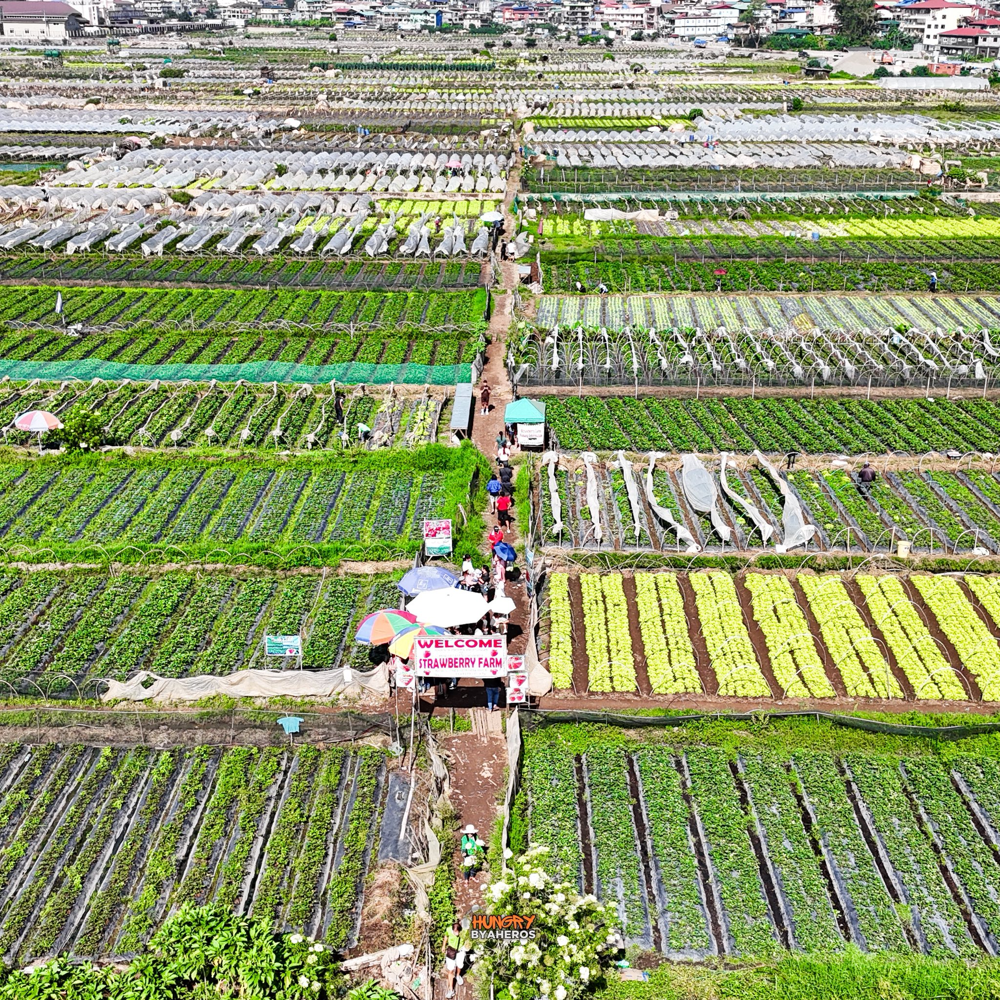

The Strawberry Farm in La Trinidad is one of the most popular tourist spots in Benguet.
Visitors can pick fresh strawberries, enjoy local products, and experience farm life.



Location: La Trinidad, Benguet
Best Time: November – May
Tip: Visit early to avoid crowds and get fresh strawberries